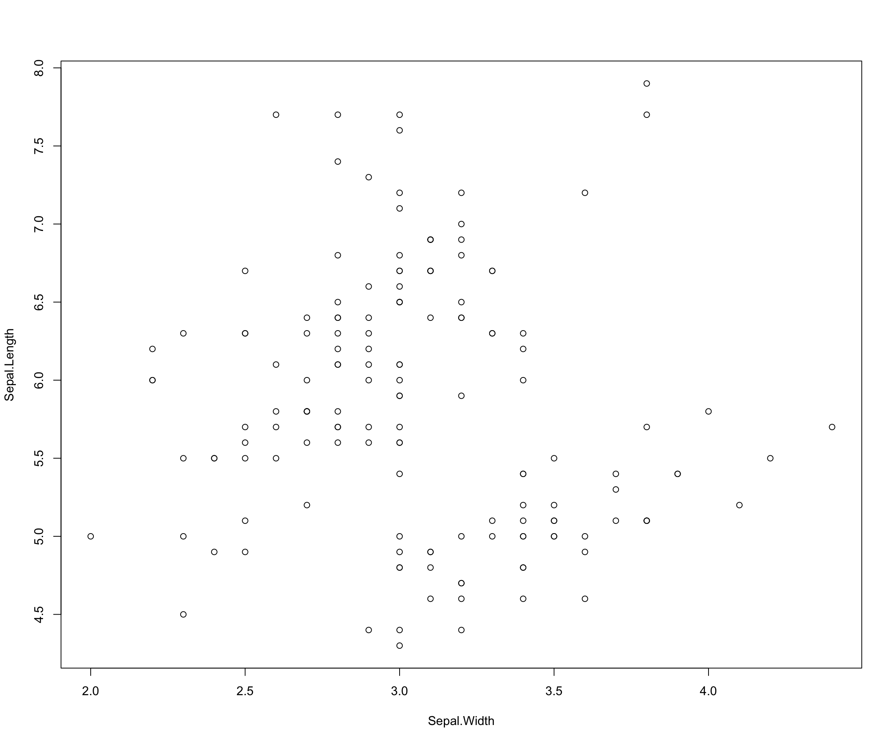
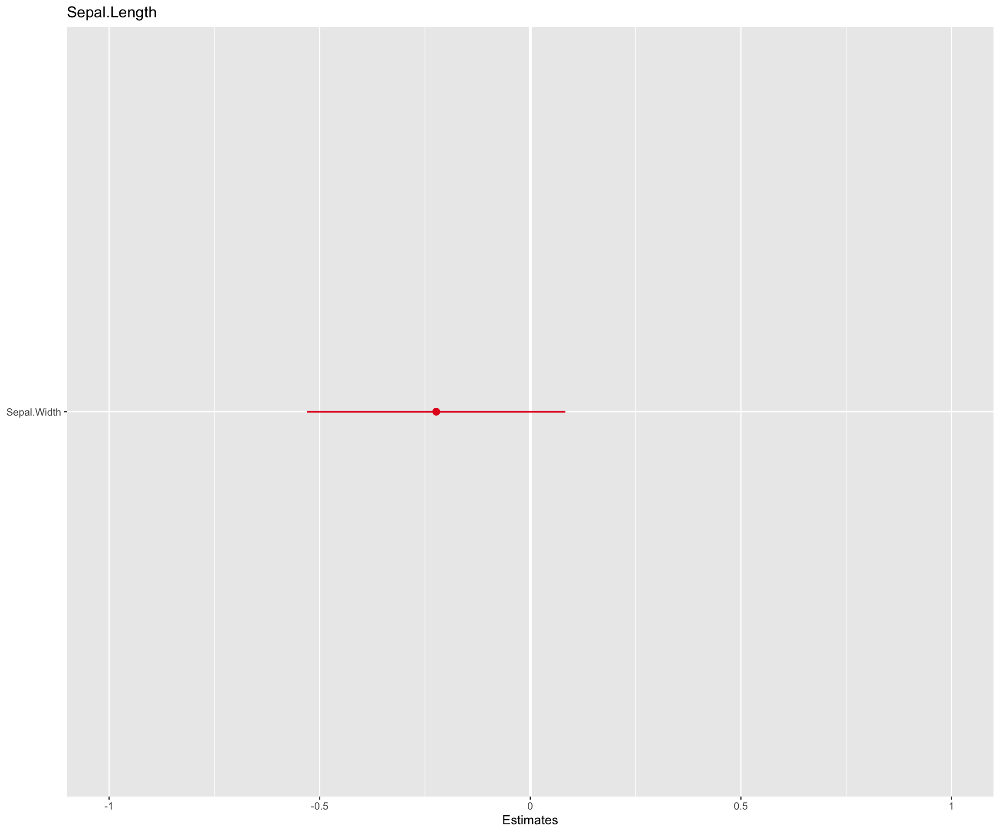
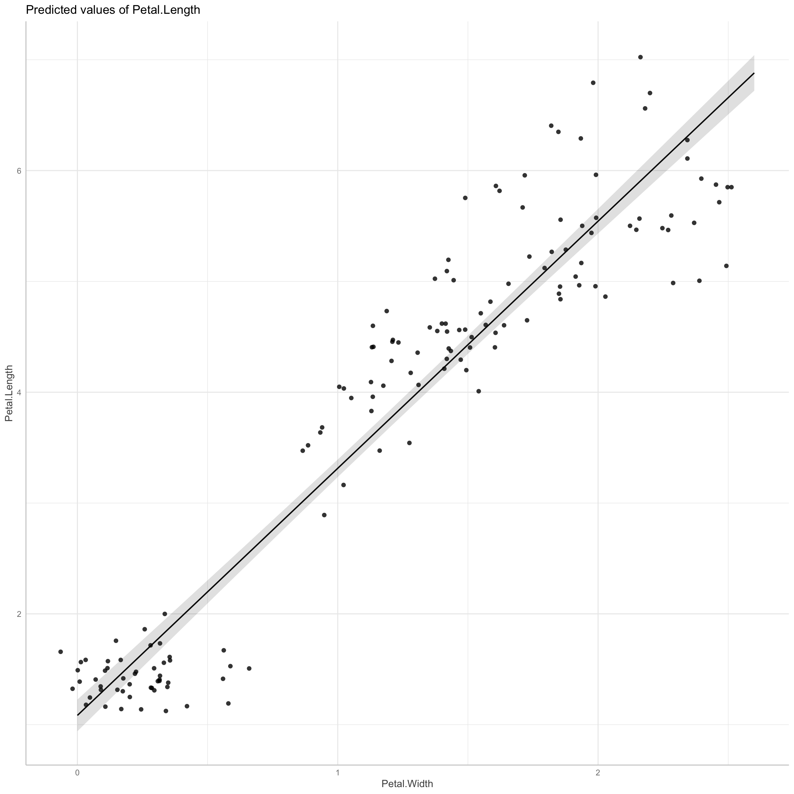
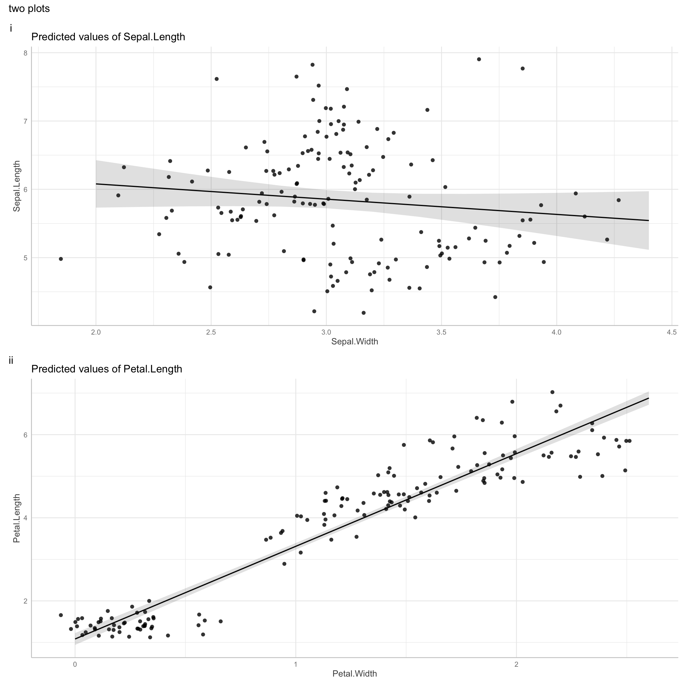

To do:
A good, and free introduction to R for Data Science Read chapters: 2-8 (they are short chapters.)
Fundamentals of R
A console runs all your code in R
A source page runs all your code in R.
A working directory is where R will look for raw data and other material.
In R-studio, (for starters) you can can use the file tab to import and save your material.
Similarly, in R-studio, (for starters) you can can use install packages by clicking the Install tab in the package pane (generally lower right pane) to install packagees.
How to use R as calculator
We can use R as a calculator. You can run any mathematical operation you would normally use by entering it into the console:
## Addition
x <- 3 + 2
x
[1] 5
## Subtraction
x <- 3 - 2
x
[1] 1
## Multiplication
x <- 3 * 2
x
[1] 6
## Division
x <- 3 / 2
x
[1] 1.5
## Modulus (Remainder from division)
x <- 3 %% 2
x
[1] 1
## Exponentiation
x = 3 ^ 2
x
[1] 9
## Integer Division (Number of times denominator fits in numerator)
x = 3 %/% 2
x
[1] 1Inspecting data
In a moment, well teach you how to import data into R. For now, lets work with a dataset that is already present in your R environment, the iris dataset.
Here are some useful commands for inspecting data
check head of dataset sing head
# the top rows and columns of the dataset
head(iris)
Sepal.Length Sepal.Width Petal.Length Petal.Width Species
1 5.1 3.5 1.4 0.2 setosa
2 4.9 3.0 1.4 0.2 setosa
3 4.7 3.2 1.3 0.2 setosa
4 4.6 3.1 1.5 0.2 setosa
5 5.0 3.6 1.4 0.2 setosa
6 5.4 3.9 1.7 0.4 setosacheck data types using str
str(iris)
'data.frame': 150 obs. of 5 variables:
$ Sepal.Length: num 5.1 4.9 4.7 4.6 5 5.4 4.6 5 4.4 4.9 ...
$ Sepal.Width : num 3.5 3 3.2 3.1 3.6 3.9 3.4 3.4 2.9 3.1 ...
$ Petal.Length: num 1.4 1.4 1.3 1.5 1.4 1.7 1.4 1.5 1.4 1.5 ...
$ Petal.Width : num 0.2 0.2 0.2 0.2 0.2 0.4 0.3 0.2 0.2 0.1 ...
$ Species : Factor w/ 3 levels "setosa","versicolor",..: 1 1 1 1 1 1 1 1 1 1 ...names
#names of the columns
names(iris)
[1] "Sepal.Length" "Sepal.Width" "Petal.Length"
[4] "Petal.Width" "Species" view rownames
# view rownames
rownames(iris)
[1] "1" "2" "3" "4" "5" "6" "7" "8" "9"
[10] "10" "11" "12" "13" "14" "15" "16" "17" "18"
[19] "19" "20" "21" "22" "23" "24" "25" "26" "27"
[28] "28" "29" "30" "31" "32" "33" "34" "35" "36"
[37] "37" "38" "39" "40" "41" "42" "43" "44" "45"
[46] "46" "47" "48" "49" "50" "51" "52" "53" "54"
[55] "55" "56" "57" "58" "59" "60" "61" "62" "63"
[64] "64" "65" "66" "67" "68" "69" "70" "71" "72"
[73] "73" "74" "75" "76" "77" "78" "79" "80" "81"
[82] "82" "83" "84" "85" "86" "87" "88" "89" "90"
[91] "91" "92" "93" "94" "95" "96" "97" "98" "99"
[100] "100" "101" "102" "103" "104" "105" "106" "107" "108"
[109] "109" "110" "111" "112" "113" "114" "115" "116" "117"
[118] "118" "119" "120" "121" "122" "123" "124" "125" "126"
[127] "127" "128" "129" "130" "131" "132" "133" "134" "135"
[136] "136" "137" "138" "139" "140" "141" "142" "143" "144"
[145] "145" "146" "147" "148" "149" "150"head(iris)
Sepal.Length Sepal.Width Petal.Length Petal.Width Species
1 5.1 3.5 1.4 0.2 setosa
2 4.9 3.0 1.4 0.2 setosa
3 4.7 3.2 1.3 0.2 setosa
4 4.6 3.1 1.5 0.2 setosa
5 5.0 3.6 1.4 0.2 setosa
6 5.4 3.9 1.7 0.4 setosatable (and use of $)
# create a table
table(iris$Species)
setosa versicolor virginica
50 50 50 change column names
# change column names
# create new dataset for
irisdat2 <- iris
# chage names of columns
names(irisdat2)[] <- c("s_l", "s_w", "p_l", "p_w", "sp")
#inspect
head(irisdat2)
s_l s_w p_l p_w sp
1 5.1 3.5 1.4 0.2 setosa
2 4.9 3.0 1.4 0.2 setosa
3 4.7 3.2 1.3 0.2 setosa
4 4.6 3.1 1.5 0.2 setosa
5 5.0 3.6 1.4 0.2 setosa
6 5.4 3.9 1.7 0.4 setosaBasic data structures
vectors of numbers ( and use of c and i:x )
go_vector <- c(1:5)
go_vector
[1] 1 2 3 4 5vectors of characters
go_vector2 <- c("hello", "world")
go_vector2
[1] "hello" "world"as.vector(irisdat2$s_l)
[1] 5.1 4.9 4.7 4.6 5.0 5.4 4.6 5.0 4.4 4.9 5.4 4.8 4.8
[14] 4.3 5.8 5.7 5.4 5.1 5.7 5.1 5.4 5.1 4.6 5.1 4.8 5.0
[27] 5.0 5.2 5.2 4.7 4.8 5.4 5.2 5.5 4.9 5.0 5.5 4.9 4.4
[40] 5.1 5.0 4.5 4.4 5.0 5.1 4.8 5.1 4.6 5.3 5.0 7.0 6.4
[53] 6.9 5.5 6.5 5.7 6.3 4.9 6.6 5.2 5.0 5.9 6.0 6.1 5.6
[66] 6.7 5.6 5.8 6.2 5.6 5.9 6.1 6.3 6.1 6.4 6.6 6.8 6.7
[79] 6.0 5.7 5.5 5.5 5.8 6.0 5.4 6.0 6.7 6.3 5.6 5.5 5.5
[92] 6.1 5.8 5.0 5.6 5.7 5.7 6.2 5.1 5.7 6.3 5.8 7.1 6.3
[105] 6.5 7.6 4.9 7.3 6.7 7.2 6.5 6.4 6.8 5.7 5.8 6.4 6.5
[118] 7.7 7.7 6.0 6.9 5.6 7.7 6.3 6.7 7.2 6.2 6.1 6.4 7.2
[131] 7.4 7.9 6.4 6.3 6.1 7.7 6.3 6.4 6.0 6.9 6.7 6.9 5.8
[144] 6.8 6.7 6.7 6.3 6.5 6.2 5.9dataframes (2 dimensional square arrays of vectors)
2 x dimensional square array with equal column and row lengths. Can contain data with multiple formats characters, facotors, integers, etc.
yuk <- data.frame(c("the", "enumeration", "of", "the", "constitution"), 6:10)
yuk
c..the....enumeration....of....the....constitution..
1 the
2 enumeration
3 of
4 the
5 constitution
X6.10
1 6
2 7
3 8
4 9
5 10rename columns of a data frame
short best
1 the 6
2 enumeration 7
3 of 8
4 the 9
5 constitution 10matrix
Same as a dataframe but can only contain one format (e.g.numbers or characters)
yok <- as.matrix(yuk)
yok
short best
[1,] "the" " 6"
[2,] "enumeration" " 7"
[3,] "of" " 8"
[4,] "the" " 9"
[5,] "constitution" "10"lists
Arrays with constraints on squareness or data types.
lok <- list(yok, yuk)
lok
[[1]]
short best
[1,] "the" " 6"
[2,] "enumeration" " 7"
[3,] "of" " 8"
[4,] "the" " 9"
[5,] "constitution" "10"
[[2]]
short best
1 the 6
2 enumeration 7
3 of 8
4 the 9
5 constitution 10Classes in R
numeric and integer
numeric means number
is.numeric(4.2)
[1] TRUEinteger means a number that is not a fraction
is.integer(4.2)
[1] FALSENote the default here:
is.integer(4)
[1] FALSEis.integer(as.integer(4))
[1] TRUEWell need to ensure that certain numbers are integers later on, when we are estimating poisson models and/or doing bayesian data analysis.
characters
Characters are strings:
factors
A factor is a category. It can be ordered (e.g.an ordinal scale) or unordered (say a participant in a study, or a wave in a longitidunal study)
str(iris)
'data.frame': 150 obs. of 5 variables:
$ Sepal.Length: num 5.1 4.9 4.7 4.6 5 5.4 4.6 5 4.4 4.9 ...
$ Sepal.Width : num 3.5 3 3.2 3.1 3.6 3.9 3.4 3.4 2.9 3.1 ...
$ Petal.Length: num 1.4 1.4 1.3 1.5 1.4 1.7 1.4 1.5 1.4 1.5 ...
$ Petal.Width : num 0.2 0.2 0.2 0.2 0.2 0.4 0.3 0.2 0.2 0.1 ...
$ Species : Factor w/ 3 levels "setosa","versicolor",..: 1 1 1 1 1 1 1 1 1 1 ...Its really important to check that ordered categories are really ordered categories in your dataset.
There was is a famous retraction recently where a group found that religion was associated with immorality, however the countries in the the study had been coded as numbers, not as factors. The studys effect entirely disappeared once this error was corrected!
Indexing in R
columns
# select second column of "yuk"
yuk[, 2]
[1] 6 7 8 9 10rows
# select second row of yuk
yuk[2, ]
short best
2 enumeration 7rows and columns
#select first row and first column of yuk
yuk[1, 2]
[1] 6selection by negation
# negate the first column of yuk
yuk[, -1]
[1] 6 7 8 9 10# negate the second column of yuk
yuk[,-2]
[1] "the" "enumeration" "of"
[4] "the" "constitution"Basic data wrangling in R
c
Sepal.Length Sepal.Width
1 5.1 3.5
2 4.9 3.0
3 4.7 3.2
4 4.6 3.1
5 5.0 3.6
6 5.4 3.9-c
# select all columns but the first and second of iris
iris_short <- iris[ ,-c( 1, 2 ) ]
head(iris_short)
Petal.Length Petal.Width Species
1 1.4 0.2 setosa
2 1.4 0.2 setosa
3 1.3 0.2 setosa
4 1.5 0.2 setosa
5 1.4 0.2 setosa
6 1.7 0.4 setosacbind
# for use with dataframes and matrices -- note that srings a are c
yokyuk<-cbind(yok,yuk)
yokyuk
short best short best
1 the 6 the 6
2 enumeration 7 enumeration 7
3 of 8 of 8
4 the 9 the 9
5 constitution 10 constitution 10str(yokyuk)
'data.frame': 5 obs. of 4 variables:
$ short: chr "the" "enumeration" "of" "the" ...
$ best : chr " 6" " 7" " 8" " 9" ...
$ short: chr "the" "enumeration" "of" "the" ...
$ best : int 6 7 8 9 10rbind
rbind(yuk[,],yok[2:3])
short best
1 the 6
2 enumeration 7
3 of 8
4 the 9
5 constitution 10
6 enumeration ofuse of $ and []
#select the fifth row of the column
iris_short$Petal.Width[5]
[1] 0.2use of $ and [i:x]
#select the 5th-25th row of the column
iris_short$Petal.Width[5:25]
[1] 0.2 0.4 0.3 0.2 0.2 0.1 0.2 0.2 0.1 0.1 0.2 0.4 0.4 0.3
[15] 0.3 0.3 0.2 0.4 0.2 0.5 0.2Indexing for logical operations
definitions
==means equals to!=means not equals to>means greater than<means less than>=means greater than or equal<=means less than or equal!means not&means and|means or!is.nameans is missing (missing values are coded in R as NA)
evaluation using logical operators
create dataframe
# create data frame
df<-data.frame( x = c(1:10),y = c(11:20) )
evaluate cases
#evaluate cases in y that greater than 15
df[,"y"] > 15
[1] FALSE FALSE FALSE FALSE FALSE TRUE TRUE TRUE TRUE
[10] TRUEsum instances
# count these cases
sum(df[,"y"] > 15)
[1] 5sum instances with a different operator
# count cases greater than or equal to 15
sum(df[,"y"] >= 15)
[1] 6another methods
# another approach
sum(df$y >= 15)
[1] 6using the or function
# combine operators
sum(df$y >= 15 | df$y <=11)
[1] 7go meta
go meta-meta!
use operators to modify data
# using assignment to modify data
df$x[df$x >=5 ] <- NA
df
x y
1 1 11
2 2 12
3 3 13
4 4 14
5 NA 15
6 NA 16
7 NA 17
8 NA 18
9 NA 19
10 NA 20using is.na and !is.na
The basic structure of R commands
The four main elements of every R code are:
- objects,
- functions,
argumentsoperators.
Figure 1 provides a simple example, that produces a new object which contains the mean of variable x.

Figure 1: The Basic Syntax of R
mean
The function mean generates the arithmetic mean of an input object:
# a function to assess the mean of a Sepal.Length
mean(iris$Sepal.Length)
[1] 5.843333sd
The function sd gives us the standard deviation:
# standard deviation of Sepal.Length
sd(iris$Sepal.Length)
[1] 0.8280661summary
# summary of the "Sepal Length" column
summary(iris$Sepal.Length)
Min. 1st Qu. Median Mean 3rd Qu. Max.
4.300 5.100 5.800 5.843 6.400 7.900 # summary of the Iris data set
summary(iris)
Sepal.Length Sepal.Width Petal.Length
Min. :4.300 Min. :2.000 Min. :1.000
1st Qu.:5.100 1st Qu.:2.800 1st Qu.:1.600
Median :5.800 Median :3.000 Median :4.350
Mean :5.843 Mean :3.057 Mean :3.758
3rd Qu.:6.400 3rd Qu.:3.300 3rd Qu.:5.100
Max. :7.900 Max. :4.400 Max. :6.900
Petal.Width Species
Min. :0.100 setosa :50
1st Qu.:0.300 versicolor:50
Median :1.300 virginica :50
Mean :1.199
3rd Qu.:1.800
Max. :2.500 Coding
The object needs to be specified inside of the function brackets as the x argument, in this case we define x = df .
Last, we assign the result of this function for later us via the <- operator to an object which we decided to call object.
In other words, we create a new object that can be further manipulated and contains information about the mean of a previously created object x. This structure represents the foundation of most operations in R.
Instead calling the mean function as above one could manually add all values of x dividing it by the number of x values.
Nevertheless, this would be very cumbersome.
For this reason, functions (pre-assembled lines of code) exist to reduce the amount of coding necessary.
These functions can be bundled into packages. Rs capacity for creating packages is main appeal of R as a statistical tool because community developed functions are available from a central repository called CRAN in the form of packages.
These packages can be installed in R with the command install.packages(package name).
It is important that you only need to install a package once on your machine, expect if you want to upgrade the package. Generally speaking you regularly want to upgrade your packages, but keep a permanent note in your code which version of a package you used when it was initially written.
Installing package
install these packages (well be using them later)
install.packages("devtools") # installing packages
install.packages("remotes") # installing packages
install.packages("tidyverse") ## data wrangling and visualisation
install.packages("lme4") # multilevel modelling
install.packages("patchwork") # arranging multiple graphs
library(devtools)
devtools::install_github("strengejacke/sjPlot") # plots and tables
install.packages("papaja") # writing APA documents
install.packages("table1") # summary tables
extra credit
devtools::install_github("easystats/easystats")
devtools::install_github("strengejacke/ggeffects")
super extra credit
if (!requireNamespace("remotes")) {
install.packages("remotes")
}
remotes::install_github("paul-buerkner/brms")
devtools::install_github("stan-dev/cmdstanr")
Rolling your own code
Lets use R to write a function. Recall that a factorial for a number \(n\) is the product of all positive inters less than or equal to \(n\). Thus the factorial for 5 = \[1 \times 2 \times 3 \times 4 \times 5\]
In R we can write a function:
# create a function to perform the factorial operation
go_factorial <- function(x) {
y <- 1
for (i in 1:x) {
y <- y * ((1:x)[i])
}
print(y)
}
Lets try it out
# test of the `go_factorial` function
go_factorial(5)
[1] 120Lets see if this is the number that Rs factorial function produces:
# R's native factorial function
factorial(5)
[1] 120We can use Rs == relational operator to evaluate whether the two functions are the same
# are the two functions equivalent for factorial five
go_factorial(5) == factorial(5)
[1] 120
[1] TRUEWe can make more complicated functions:
# function for factorial that throws warnings when the data that are entered are not appropriate.
go_bayes_factorial <- function (x) {
# check is the number is negative, positive or zero
if (x < 0) {
print("not even Ashley Bloomfield could make a factorial for a negative number")
} else if (x == 0) {
print("the factorial of zero is defined as 1")
} else {
for (i in 1:x)
y <- 1
for (i in 1:x) {
y <- y * ((1:x)[i])
}
print(y)
}
}
Well come back to functions later. Its useful to look at an example of a function so that you can see that R is much more than a calcultor. It is a tool to empower you for doing data anlysis in new and creative ways.
Coding etiquette
Keep your code legible and annotate
Why is this bad code?
df1<-data.frame(a=rnorm(10,1,1),b=rnorm(10,4,8),c=rnorm(10,8,1),d=rnorm(10,7,2))
Why is this better code?
# Create a data frame with four columns of randomly generated numbers specifying different means and standard deviations
df1 <- data.frame(
a = rnorm( 10, mean = 1, sd = 1 ),
b = rnorm( 10, mean = 4, sd = 8 ),
c = rnorm( 10, mean = 8, sd = 1 ),
d = rnorm( 10, mean = 7, sd = 2 )
)
using R!
data summary
# basic summary
summary(iris)
Sepal.Length Sepal.Width Petal.Length
Min. :4.300 Min. :2.000 Min. :1.000
1st Qu.:5.100 1st Qu.:2.800 1st Qu.:1.600
Median :5.800 Median :3.000 Median :4.350
Mean :5.843 Mean :3.057 Mean :3.758
3rd Qu.:6.400 3rd Qu.:3.300 3rd Qu.:5.100
Max. :7.900 Max. :4.400 Max. :6.900
Petal.Width Species
Min. :0.100 setosa :50
1st Qu.:0.300 versicolor:50
Median :1.300 virginica :50
Mean :1.199
3rd Qu.:1.800
Max. :2.500 table1::table1(~ Sepal.Length + Sepal.Width + Petal.Length + Petal.Width |Species, data = iris )
| setosa (N=50) |
versicolor (N=50) |
virginica (N=50) |
Overall (N=150) |
|
|---|---|---|---|---|
| Sepal.Length | ||||
| Mean (SD) | 5.01 (0.352) | 5.94 (0.516) | 6.59 (0.636) | 5.84 (0.828) |
| Median [Min, Max] | 5.00 [4.30, 5.80] | 5.90 [4.90, 7.00] | 6.50 [4.90, 7.90] | 5.80 [4.30, 7.90] |
| Sepal.Width | ||||
| Mean (SD) | 3.43 (0.379) | 2.77 (0.314) | 2.97 (0.322) | 3.06 (0.436) |
| Median [Min, Max] | 3.40 [2.30, 4.40] | 2.80 [2.00, 3.40] | 3.00 [2.20, 3.80] | 3.00 [2.00, 4.40] |
| Petal.Length | ||||
| Mean (SD) | 1.46 (0.174) | 4.26 (0.470) | 5.55 (0.552) | 3.76 (1.77) |
| Median [Min, Max] | 1.50 [1.00, 1.90] | 4.35 [3.00, 5.10] | 5.55 [4.50, 6.90] | 4.35 [1.00, 6.90] |
| Petal.Width | ||||
| Mean (SD) | 0.246 (0.105) | 1.33 (0.198) | 2.03 (0.275) | 1.20 (0.762) |
| Median [Min, Max] | 0.200 [0.100, 0.600] | 1.30 [1.00, 1.80] | 2.00 [1.40, 2.50] | 1.30 [0.100, 2.50] |
# plot relationship (what is happening here? )
plot( Sepal.Length ~ Sepal.Width , data = iris )

model
library("tidyverse") # plotting
library("ggeffects") # plotting
library("ggplot2") # plotting
library("patchwork") # arrange multiple plots
library("sjPlot") # tables and plots
# basic model
m1<- lm(Sepal.Length ~ Sepal.Width, data = iris)
summary(m1)
Call:
lm(formula = Sepal.Length ~ Sepal.Width, data = iris)
Residuals:
Min 1Q Median 3Q Max
-1.5561 -0.6333 -0.1120 0.5579 2.2226
Coefficients:
Estimate Std. Error t value Pr(>|t|)
(Intercept) 6.5262 0.4789 13.63 <2e-16 ***
Sepal.Width -0.2234 0.1551 -1.44 0.152
---
Signif. codes:
0 '***' 0.001 '**' 0.01 '*' 0.05 '.' 0.1 ' ' 1
Residual standard error: 0.8251 on 148 degrees of freedom
Multiple R-squared: 0.01382, Adjusted R-squared: 0.007159
F-statistic: 2.074 on 1 and 148 DF, p-value: 0.1519results
# better summary method
sjPlot::tab_model(m1)
| Sepal.Length | |||
|---|---|---|---|
| Predictors | Estimates | CI | p |
| (Intercept) | 6.53 | 5.587.47 | <0.001 |
| Sepal.Width | -0.22 | -0.530.08 | 0.152 |
| Observations | 150 | ||
| R2 / R2 adjusted | 0.014 / 0.007 | ||
# plot the coefficients
sjPlot::plot_model(m1)

graph predicted effects
What is the advantage of this graph?
pp1 <- plot(p1,
add.data = TRUE,
dot.alpha = .8,
jitter = .2)
pp1

try another model
head(iris)
Sepal.Length Sepal.Width Petal.Length Petal.Width Species
1 5.1 3.5 1.4 0.2 setosa
2 4.9 3.0 1.4 0.2 setosa
3 4.7 3.2 1.3 0.2 setosa
4 4.6 3.1 1.5 0.2 setosa
5 5.0 3.6 1.4 0.2 setosa
6 5.4 3.9 1.7 0.4 setosa
Call:
lm(formula = Petal.Length ~ Petal.Width, data = iris)
Residuals:
Min 1Q Median 3Q Max
-1.33542 -0.30347 -0.02955 0.25776 1.39453
Coefficients:
Estimate Std. Error t value Pr(>|t|)
(Intercept) 1.08356 0.07297 14.85 <2e-16 ***
Petal.Width 2.22994 0.05140 43.39 <2e-16 ***
---
Signif. codes:
0 '***' 0.001 '**' 0.01 '*' 0.05 '.' 0.1 ' ' 1
Residual standard error: 0.4782 on 148 degrees of freedom
Multiple R-squared: 0.9271, Adjusted R-squared: 0.9266
F-statistic: 1882 on 1 and 148 DF, p-value: < 2.2e-16pp2<-plot(
p2 <- ggeffects::ggpredict(m2, terms = "Petal.Width"),
add.data = TRUE,
dot.alpha = .8,
jitter = .2
)
pp2

## arange plots
library(patchwork)
pp1 / pp2 + plot_annotation(title = "two plots", tag_levels = "i")

Appendix: # symbol is for commenting code
In case you havent figured it out yet, the hash symbol # is for commenting:
r_comments <- 200 # here I am creating the variable for the number of time Jack says R is great
jill_roll <- 199 # here I'm creating a variable for the number of times Jill rolls here eyes
outcome <- log(r_comments) * sqrt(jill_roll) * pi # here I am illustrating some functions in r using the variables I just created
outcome # print outcome
[1] 234.8088Rounding
It is often useful to round numbers:
round(outcome, digits = 2) # illustrate the useful `round` function.
[1] 234.81
## to be continued
```{.r .distill-force-highlighting-css}